|
Version 0.1 |
Newton Software Solutions LTD
Report Maker User Guide
Report Maker
User Guide
Newton Software Solutions LTD
Report Maker User Guide
ã Newton Software Solutions Ltd
Table of Contents
3 Site Registration and Account Administration
3.3 Requesting a Password Reset
4.2.1 Adding Pupils Individually
4.2.2 Adding Pupils from a list
5.2.2 Editing and Saving Statement Group
5.2.5 Special Codes in statements
6.1.1 Create Reports without using a class
6.1.2 Create Reports using a class
6.1.3 Adding Statements to a Report
Table of Figures
Figure 6 – Editing and saving a Statement Group.
Figure 7 - Formatting Comments in Statements.
Figure 8 - Renaming a Statement Group
Figure 9 – Remove a Statement Group
Figure 10 - Special code icons
Figure 11 - Create Reports Sceen
This guide follows the logical order of the required steps needed to generate pupil assessment reports. This is summarised as follows :
· Register on the site and login.
· Create your class and add your pupils.
· Create your statements or bookmark existing statements.
· Generate your reports.
All the functions described in this guide are done using screens accessed via the menu system. The main menu headings and all the sub menu items are shown below.
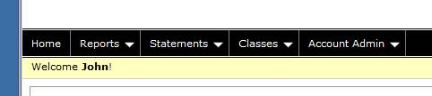
Figure 1 - Main Menu
Where ever you are in the application you may return to the home page by clicking on the word “Home” show above in Figure 1 - Main Menu.
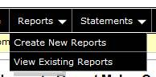
Figure 2 - Reports Menu
The reports menu allows you to create new reports and view reports that you have saved previously. The details of these functions is described in section “6 Reports”.
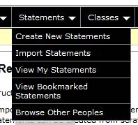
Figure 3 - Statements Menu
The functions available on the Statements menu are all described in “5 Statement Management”.
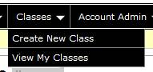
Figure 4 - Classes Menu
The functions available on the Classes menu are described in “4 Class Management”
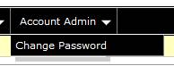
Figure 5 - Account Admin Menu
The change password functionality is described in section 3.4 below.
This chapter describes all the tasks involved in creating and managing an account and logging onto the system.
Before you can use Report Maker you must go through the registration process. Navigate to the logon page at the url :
https://apps.newtonsoftware.co.uk/reportmaker
From the logon page click on the Register link. On the registration page enter all the details, the click the “Register” button.
An email containing a web link will be sent to the email address you used on the registration page. Please click on this link to complete the registration process. If you do not receive the email please check your spam / junk folder. If you require a 2nd email sending with the registration link in just try to login and the registration link will be resent.
Once you have successfully completed the registration process you can logon. Enter your email address and the password you choose during the registration process described above. If you have forgotten your password click on the Request a reset link.
If you have forgotten your password click on the Request a reset from the logon page. On the request password reset screen enter your email address. This will email you a new password. Once you have logged in with this new password it is recommended that you update your password.
To update your password use the “Account Admin” menu and select the “Change Password” option. You will have to enter your existing password as well as your new password.
In order to create your reports it is best to store the pupil names in the system. This is not mandatory however but has the following benefits.
· When creating reports you can just select the pupil names from a drop down list and concentrate on creating the reports rather than having to type in each pupil name.
· You can save the pupil reports in the system. These can be recalled at a later stage for modification or printing.
· Pupil names could be used year on year without being retyped.
Select the “Classes” Menu then “Create New Class” option.
Enter the name of the class and the year of the class then click “Create”.
Select the “Classes” Menu then “View My Classes” option.
Click on the name of the class that you want to add pupils too.
On the top row of the pupils table there is a “New” button. Click this to type in the name of a pupil. In the dialog box displayed enter the first name, last name and pupil gender. Select the “Save” button to create the pupil.
You can also add an entire class at once. To do this you need data in the format :
firstname lastname gender
A space between each of these fields is required. You may already have data in a word document or excel spreadsheet. If the gender field contains an ‘f’ then the gender is set to female, otherwise it is set to male, therefore you may use ‘f’ or ‘female’ in this field.
To import this type of data navigate to the class you want to use, as described in 4.2. On the top row of the pupils table there is a “Import” button. In the box displayed type in the pupil details or paste them in from some other source.
If you need to modify the details of a pupil you click on the “Edit” button next to the pupil name. This allows all of their details to be modified.
If you need to modify the details of a pupil you click on the “Remove” button next to the pupil name. This will remove the pupil from the class.
You have several options when it comes to creating statements. You can create statements from scratch, copy someone else’s statements or bookmark someone else’s statements. This section describes all these options and also describes how to edit the statements you have created.
From the “Statements” menu select the “Create New Statements” option. You will be prompted to set the statement name, category and subject area. In the table at the top of the screen enter details in all the boxes and click on the “Update” button. The “Share School” option does not currently have any functionality. To allow others to bookmark and copy your statements leave the “Share Public” option ticked.
For creating and editing statement groups see 5.2 below.
You can navigate to this screen using by selecting the “Statements” menu and then selecting existing statements from the “View My Statements” screen. You will also be on this screen if you have followed the instructions described in 5.1 Create Statements above.
You can amend the statement details in the table at the top of the screen. The “Share School” option does not currently have any functionality. To allow others to bookmark and copy your statements leave the “Share Public” option ticked.
Once you have set the heading information you need to create the statements. Statements can be sub divided into “Statement Groups”. These groups allow you to subdivide your statements into whatever groups you want. For example if you are creating primary reports you may want to create a statement group for each subject. For secondary reports you may want to use the groups for year groups or pupil ability.
On the statements screen click the “Add Statement Group” button. In the popup box enter a name for your statement group, e.g. numeracy and click the “Add” button. This name is easily changed as described in 5.2.3 below.
To edit a statement group click in the main text box, highlighted in red below. To save the statements click on the save button highlighted in blue below. These statements are saved to a database and not to your local computer. This means that you can access these statements from any computer once you have logged in.
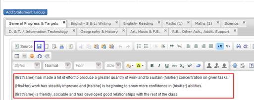
Figure 6 – Editing and saving a Statement Group
You can apply any formatting necessary to your statements by choosing formatting options from the toolbar just above the red box in Figure 6 above. You can enter text to help you separate certain areas in your statements, e.g. you could enter all your comments / notes (things that aren’t actual statements) in Red Bold as shown in Figure 7 below.
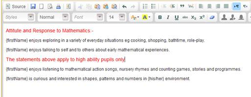
Figure 7 - Formatting Comments in Statements.
To rename a statement group double click on the tab heading that you want to update, for example if you want to change the Group Name of “General Progress & Targets” double click on the heading “General Progress & Targets” as highlighted in the red box below.
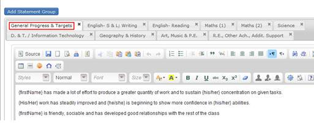
Figure 8 - Renaming a Statement Group
To remove a statement group click on the cross (x) at the top right hand corner of the tab heading. This is highlighted in red below. If you want to permanently delete the statement group select the appropriate response from the confirmation dialogs.
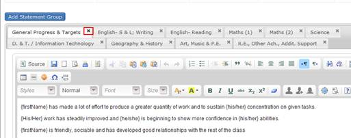
Figure 9 – Remove a Statement Group
You can use special codes in your statements. When the statements are generated for each pupil the codes are translated into appropriate text. All the codes available are listed below. Please note that all codes must be surrounded by {}.
|
Code |
Description |
|
{firstName} |
Displays the first name of the pupil. Can be used in conjunction with any other text such as ‘s, e.g. {firstName}’s |
|
{lastName} |
Displays the last name of the pupil. |
|
{fullName} |
Equivalent to {firstName} {lastName} |
|
{he/she} |
Displays he for males and she for females |
|
{his/her} |
Displays his for males and her for females |
|
{his/hers} |
Displays his for males and hers for females |
|
{him/her} |
Displays him for males and her for females |
|
{He/She} |
Displays He for males and She for females |
|
{His/Her} |
Displays His for males and Her for females |
|
{His/Hers} |
Displays His for males and Hers for females |
|
{Him/Her} |
Displays Him for males and Her for females |
Table 1 - Special Codes
Special codes can be manually added to the statements by typing them in or using the icons highlighted in red in below.
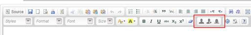
Figure 10 - Special code icons
The furthest left of the 3 icons inserts {firstName}. The middle icon inserts {fullName}, the furthest right icon inserts {he/she}. To use any of the other gender specific codes just edit the text in the {he/she} to match any of the codes shown in Table 1 above.
If you are user of a previous version of report maker you can import your statements. Choose the “Statements Menu” followed by the “Import Statements” option. Enter details in all the inputs on the import screen and the select the file you want to import. To do this you just browse to the folder containing the .rep files from the previous version of report maker. Each set of data is loaded into a Statement Group.
There are two methods for using existing statements (that haven’t been created by you) in your reports. You can either copy the statements; this effectively makes the statements your own, after which you can modify them. Alternatively you can bookmark statements. Bookmarking statements allows you to access the statements from the report creation screen (6.1), however you are unable to modify bookmarked statements.
To copy statements choose the “Statements” menu then “Browse Other Peoples” then select the statements you want to copy. On the statement details screen you will see a “Copy To My Statements” button. Click on this and the statements will be copied, you will also be taken straight to the new statements which can be edited. Please note that changing the copied statements has no effect on the original statements they were copied from.
To bookmark statements choose the “Statements” menu then “Browse Other Peoples” then select the statements you want to bookmark. On the statement details screen you will see a “Bookmark Statements” button. Click on this and the statements will be bookmarked. To remove the statements from your bookmarks just click on the “Remove Bookmark” button which is displayed on the statement details screen once you have bookmarked the statements. Bookmarked statements are denoted by the symbol :
This is the business end of Report Maker and what you are using the software for. You can create new reports or view existing reports in this section
To create reports choose the “Reports” menu and the “Create New Reports” option. This takes you to the following screen shown below.
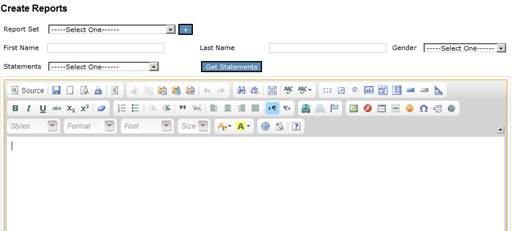
Figure 11 - Create Reports Sceen
NB. This is not the recommended method of creating reports as you will not be able to save the pupil reports if done using this method.
If you have statements of your own or have bookmarked statements you can create reports straight away without creating a Report Set. To do this, manually type in the name of the pupil. Select the statements you want to use from the Statements list and click on the “Get Statements” button. This will generate the statements for this pupil based on their name and gender. These statements are visible by scrolling down the screen.
In order to use a class of pupils that has been predefined by you, either select an existing Report Set if you are part way through creating reports for a Report Set or click on the “+” button next to the Report Set list. A “Report Set” is a logical grouping of reports for a particular class. For example you might want to create a report set for each of your classes, each year. When creating a report set, using the dialog box below, put in a descriptive name (e.g. 3FS 2012) and select one of your classes, then click in the “Create a Report Set” button. The pupils in the class will then be displayed on the report creation screen and you can select them from a drop down list. Select a pupil and the statements you want to use the click the “Get Statements” button. This will generate the statements for this pupil based on their name and gender. These statements are visible by scrolling down the screen.
Once you have click on the “Get Statements” button describe in 6.1.1 or 6.1.2 the generated statements are displayed at the bottom of the screen. Scroll down to these statements then click on the ones that are appropriate for the current pupil.
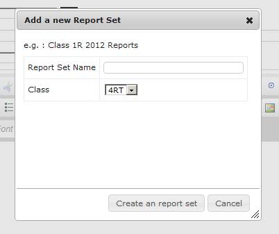
Figure 12 - Create a new Report Set
If you are using a report set, as described in 6.1.2 to select the pupils you can save the reports. These are written to the database and are available for you to recall at any point in the future, this is described below in 6.2. To save a report click on the “Save” button, this is shown below in red.
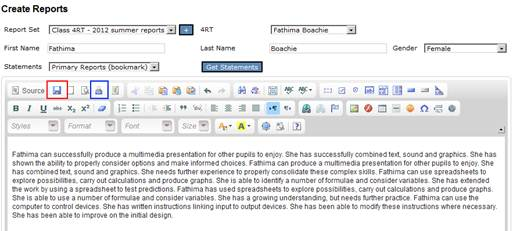
Figure 13 - Saving and printing Reports
Once you have created the pupil report you have a few options.
· Save the report (as described in 6.1.4) and then come back to it at a later stage for printing.
· Print the report directly from your browser. This can be done by clicking on the button highlighted in blue in “Figure 13 - Saving and printing Reports”. You may need to change your browser settings to turn off headers and footers.
· Copy the text from the browser window and paste it into another application such as Microsoft word. You may have a school word template that you need to use for reports.
If you have previously saved reports you can view them again at any time in the future. You can do this by choosing the “Reports” menu and “View Existing Reports” option. This will show a list of all the saved reports you have created. You can order this list by any of the columns displayed on the screen by clicking the column heading you want to sort on. If you click on the name of the pupil from this list it will take you directly to the report, where you can amend it further if required or carry out one of the actions described in “6.1.5 Using the Report”